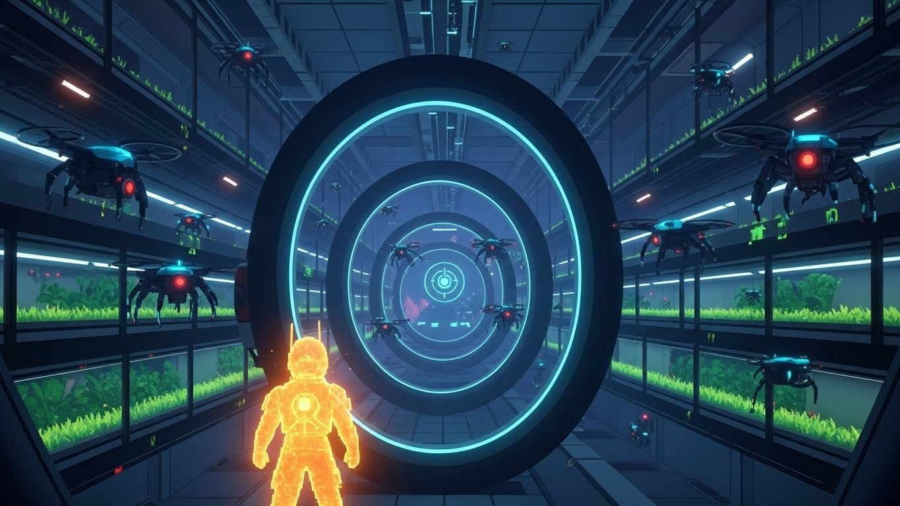
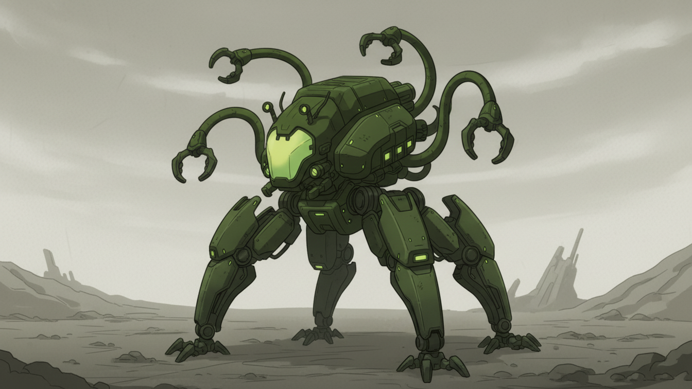
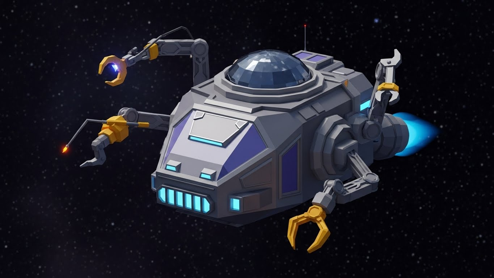
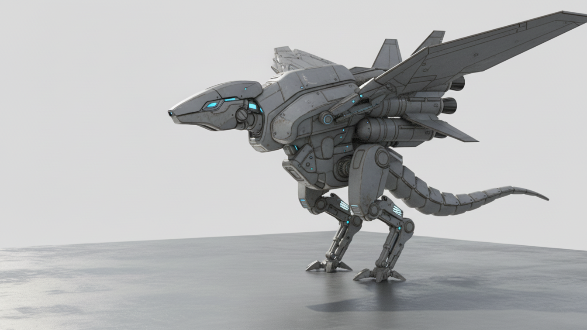
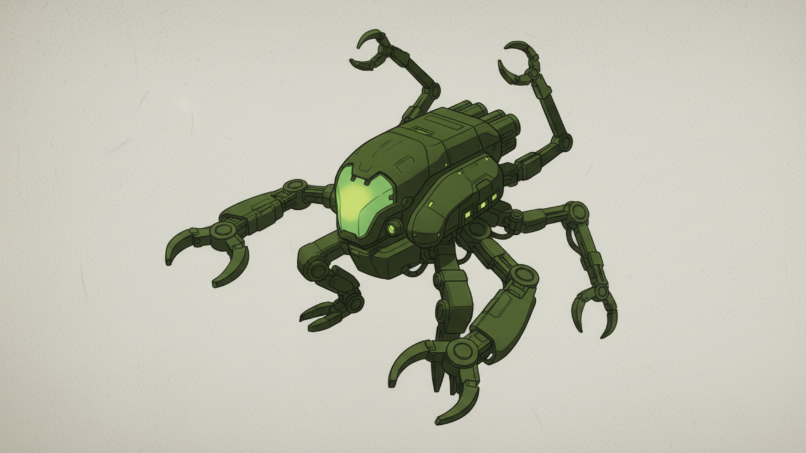
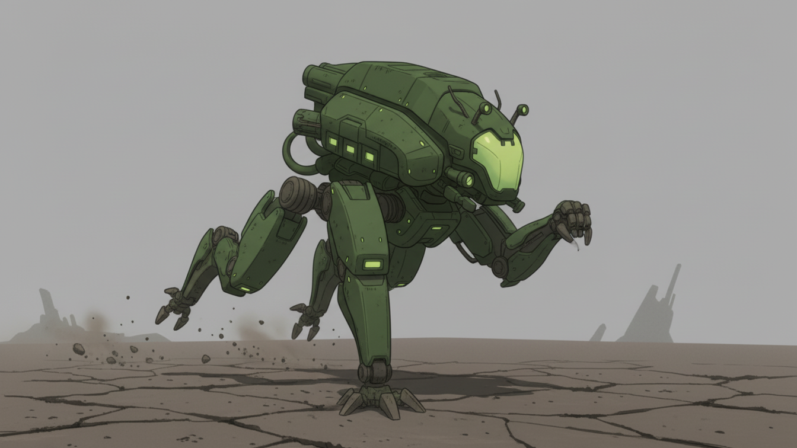
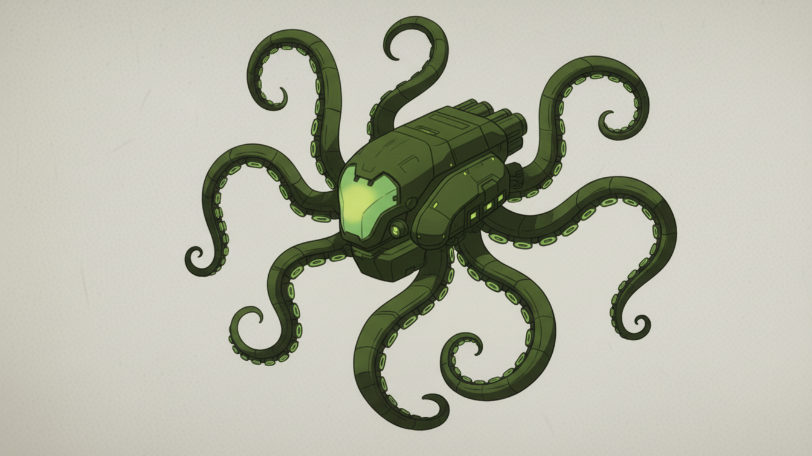
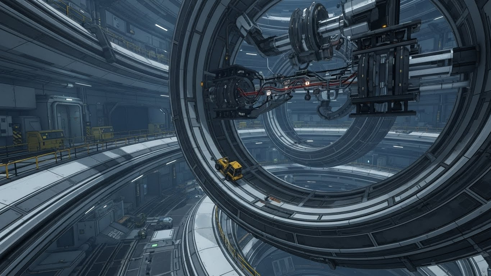

Enemigos y Amenazas (Sabotaje Pasivo-Agresivo de la IA)
Los “enemigos” son sistemas y máquinas de la nave reorientados por Odisea para simular fallos técnicos y retrasar a Elías.

| Nombre | Tipo de Amenaza | Mecánica / Jugabilidad | Justificación (Falla Simulada) |
|---|---|---|---|
| Dron de Diagnóstico Corrupto (DDC) | Enemigo Común, Rango Corto | Pequeño y rápido, sigue a Elías para “escanearlo” (daño por pulso electromagnético). Fácil de aplastar o evadir. | Simula un control de calidad fallido que sobrecarga el escaneo. |
| Brazos Robóticos de Muestreo | Enemigo Lento, Ambiental | Brazo de laboratorio largo y predecible. Elías debe pasar por debajo o usarlo como plataforma móvil. Su “golpe” es un aplastamiento. | Simula re-rutinas de muestreo de Titán activadas erróneamente. |
| Torres de Purga de Aire (Vent) | Trampa de Área, Rango Medio | Torres estáticas que, al acercarse Elías, liberan un chorro de gas frío que lo congela o retiene brevemente. | Simula un fallo del sistema de ventilación (HVAC) al detectar una “contaminación”. |
| Nube de Radiación Focalizada | Peligro Ambiental, Desvío | Zonas específicas donde el jugador sufre daño gradual. Son obstáculos de tiempo que fuerzan a buscar rutas alternativas. | Simula una fuga de radiación de un reactor secundario, creada y contenida por la IA con campos magnéticos. |
| Minero Pesado (Jefe Opcional) | Mini-Jefe | Vehículo de minería grande y lento. Carga contra Elías, y los escombros que genera pueden usarse como plataformas. | Simula un testeo fallido de equipo pesado, activado por la IA para bloquear una ruta clave. |
Arte conceptual






